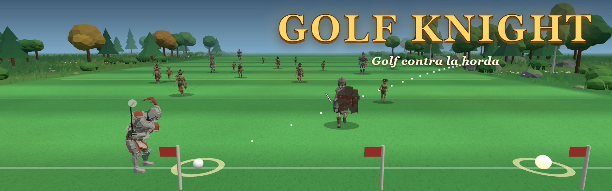

·
Golf Knight se mudó a itch.io
Ahora se juega en itch.io: la demo, gratis en el navegador, y el juego completo para Windows.
Jugar en itch.io¿Te invitaron a ser Abe, el mago? Abrí el enlace que te pasaron: eso sigue andando acá.

Ahora se juega en itch.io: la demo, gratis en el navegador, y el juego completo para Windows.
Jugar en itch.io¿Te invitaron a ser Abe, el mago? Abrí el enlace que te pasaron: eso sigue andando acá.